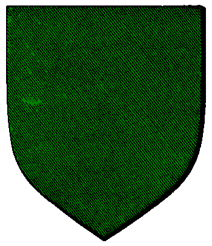

| Übersicht,
Anschläge und Stammtisch (RPG) |
|
Suche ....dich
|
| BLUESKY (RIP) |
Ich suche Dringend Ambra di Luna.Kann mir jemand Informationen über sie geben? Ich bezwecke damit nichts böses, aber ich glaube ich kenne sie aus der Vergangenheit, sicher binn ich nicht.Ich kann mich nicht an die Zeit vor dem Aufwachen erinnern.
Mythos
Zur 2. Stunde am 28.Dunkelfrost im Jahre 415 |
28.04.04 13:37
 |
|
| Asajj Ventres (RIP) |
Welche Nation ist denn die gesuchte Dame ?
Revan
Zur 10. Stunde am 28.Dunkelfrost im Jahre 415 |
28.04.04 15:21
|
|
| BLUESKY (RIP) |
Das wiess ich nicht.Sie erscheint mir nur ab und zu in den Träumen. Ich wäre dankbar über jegliche Information.
Im Grunde weiss ich weder woher ich sie kenne noch ob überhaupt. Jedoch ist das vielleivht der schlüssel zur meiner Vergangenheit nach der ich die Ganze Zeit fahnde.
Mythos
Zur 16. Stunde am 29.Dunkelfrost im Jahre 415 |
28.04.04 22:27
|
|
Tarik Laertes
  |
Ich hoffe für Dich, daß Du sie findest, denn unsere eigene Vergangenheit sollte eigentlich das Einzige sein, was man uns nicht nehmen kann.
Tarik Laertes
Zur 1. Stunde am 32.Dunkelfrost im Jahre 415 |
29.04.04 11:46
|
|
| Lacrim Blutengel (RIP) |
dann such weiter
Vampire,
Anführer der glorreichen Nation "Klingen der Vergeltung"
Zur 2. Stunde am 32.Dunkelfrost im Jahre 415 |
29.04.04 11:50
|
|
| Asajj Ventres (RIP) |
Wenn ich jedesmal jemanden suchen würde der mir im Traum erscheint... hachherrje *g*
Asajj Ventres
Zur 7. Stunde am 32.Dunkelfrost im Jahre 415 |
29.04.04 13:08
|
|
| BLUESKY (RIP) |
Nein es war kein Traum.. es war allzu real und manschmal kommen mir , ich möchte sie als Visionen vergangener Zeiten bezeicnen, auch Tagsüber.
@Tarik Laertes : Ihr habt ganz recht. Ich weiss selber nicht welche dämonischen Mächtemich um meine Vergangenheit gebracht haben.Doch nicht alles haben sie mir genommen.
Mansches aknn ich einfach aus mir herausausüben ohne mich daran zu erinnern je darin ausgebildet worden zu sein, wie Z.B die Kampfeskunst oder die Kunst der Kaligraphie. Auch an den Dunft der Dahatianischen Elbenpfeife kann ich mich allzu dutlich erinnern ohne es jemals zuvor in einem Gasthaus geraucht zu haben(mir ist bissher kein Gasthaus bekannt das dieses seltene Kraut anbietet.
Mythos
Zur 8. Stunde am 32.Dunkelfrost im Jahre 415 |
29.04.04 13:15
|
|
| Cassius (RIP) |
gib zu das du ein ganz übler Stelzbock bist *fg*
Cassius
Zur 23. Stunde am 32.Dunkelfrost im Jahre 415 |
29.04.04 16:48
|
|
| Hellsboy (RIP) |
*g* Ich denke das wird er nicht freiwillig zugeben! ^^
Sir Minto Silberschild,
Vorsteher von Strahlen des Diamantes,
Schatzmeister der Steppenreiter
Zur 23. Stunde am 32.Dunkelfrost im Jahre 415 |
29.04.04 16:57
|
|
| Cassius (RIP) |
@Minto... du kennst dich da aus??? Du Stelzbock Nr.2 Du!!
Cassius
Zur 24. Stunde am 32.Dunkelfrost im Jahre 415 |
29.04.04 17:03
|
|
| Hellsboy (RIP) |
Mmmmh eilt mir mein Ruf voraus?
*mal nen ne Stufe langsamer macht*
Sir Minto Silberschild,
Vorsteher von Strahlen des Diamantes,
Schatzmeister der Steppenreiter
Zur 6. Stunde am 33.Dunkelfrost im Jahre 415 |
29.04.04 18:30
|
|
| BLUESKY (RIP) |
Ich weiss nicht was ihr mit Stelzbock meint- bitte tragt eure Seltsamen Debatten woanders aus.
Mythos
Zur 22. Stunde am 33.Dunkelfrost im Jahre 415 |
29.04.04 22:13
|
|
| Flo der Geschickte (RIP) |
*lacht* was ist ein Stelzbock?
Naja aber was wenn es sie nicht mehr gibt diese Dame aus ihrer Vergangenheit?
Flo der Geschickte
Zur 24. Stunde am 33.Dunkelfrost im Jahre 415 |
29.04.04 22:45
|
|
| Njaminjami Stoppelhoppser (RIP) |
Befragt die Sieben, vielleicht können die euch erklären was ein Stelzbock ist. Ich frag da lieber meinen Bruder :)
Iriana Silberklinge
Zur 9. Stunde am 36.Dunkelfrost im Jahre 415 |
30.04.04 11:57
|
|
Übersicht,
Anschläge und Stammtisch (RPG)
|